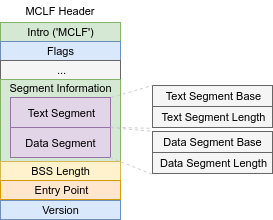
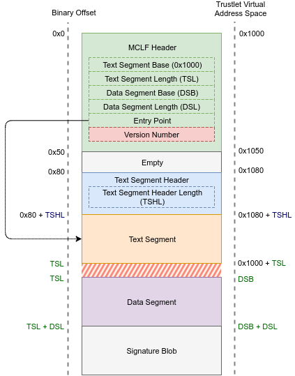
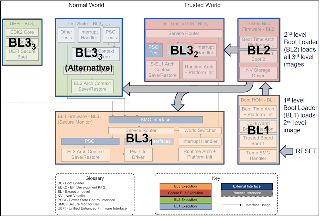
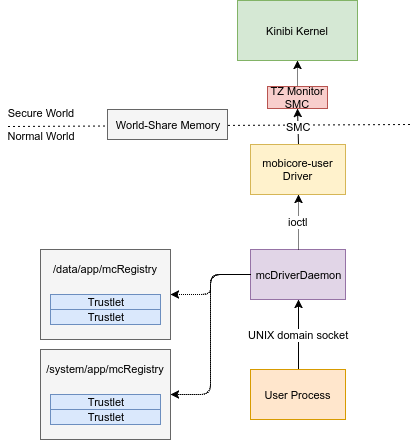
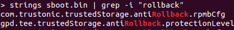
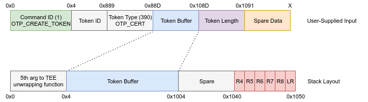

Trust Issues: Exploiting TrustZone TEEs
Blog Post Originally From Google Project Zero Blog
Posted by Gal Beniamini, Project Zero
Mobile devices are becoming an increasingly privacy-sensitive platform. Nowadays, devices process a wide range of personal and private information of a sensitive nature, such as biometric identifiers, payment data and cryptographic keys. Additionally, modern content protection schemes demand a high degree of confidentiality, requiring stricter guarantees than those offered by the “regular” operating system.
In response to these use-cases and more, mobile device manufacturers have opted for the creation of a “Trusted Execution Environment” (TEE), which can be used to safeguard the information processed within it. In the Android ecosystem, two major TEE implementations exist - Qualcomm’s QSEE and Trustonic’s Kinibi (formerly <t-base). Both of these implementations rely on ARM TrustZone security extensions in order to facilitate a small “secure” operating system, within which “Trusted Applications” (TAs) may be executed.
In this blog post we’ll explore the security properties of the two major TEEs present on Android devices. We’ll see how, despite their highly sensitive vantage point, these operating systems currently lag behind modern operating systems in terms of security mitigations and practices. Additionally, we’ll discover and exploit a major design issue which affects the security of most devices utilising both platforms. Lastly, we’ll see why the integrity of TEEs is crucial to the overall security of the device, making a case for the need to increase their defences.
Unfortunately, the design issue outlined in this blog post is difficult to address, and at times cannot be fixed without introducing additional dedicated hardware or performing operations that risk rendering devices unusable. As a result, most Qualcomm-based devices and all devices using Trustonic’s Kinibi TEE versions prior to 400 (that is, all Samsung Exynos devices other than the Galaxy S8 and S8 Plus) remain affected by this issue. We hope that by raising awareness to this issue we will help push for a more secure designs in the future.
I would like to note that while the current designs being reviewed may be incompatible with some devices’ use-cases, improved designs are being developed as a result of this research which may be accessible to a larger proportion of devices.
TrustZone TEEs
TrustZone forms a hardware-based security architecture which provides security mechanisms both on the main application processor, as well as across the SoC. TrustZone facilitates the creation of two security contexts; the “Secure World” and the “Normal World”. Each physical processor is split into two virtual processors, one for each of the aforementioned contexts.
As its name implies, the “Secure World” must remain protected against any attacks launched by the “Normal World”. To do so, several security policies are enforced by hardware logic that prevents the “Normal World” from accessing the “Secure World”’s resources. What’s more, as the current security state is accessible on the system bus, peripherals on the SoC can be designated to either world by simply sampling this value.
TrustZone’s software model provides each world with its own copies of both lower privilege levels -- EL0 and EL1. This allows for the execution of different operating system kernels simultaneously - one running in the “Secure World” (S-EL1), while another runs in the “Normal World” (EL1). However, the world-split is not entirely symmetrical; for example, the hypervisor extensions (EL2) are not available in the “Secure World”.

*TOS: Trusted Operating System
On Android devices, TrustZone technology is used among other things to implement small “security-conscious” operating systems within which a set of trusted applications (TAs) may be executed. These TrustZone-based TEEs are proprietary components and are provided by the device’s manufacturers.
To put it in context - what we normally refer to as “Android” in our day to day lives is merely the code running in the “Normal World”; the Linux Kernel running at EL1 and the user-mode applications running at EL0. At the same time, the TEE runs in the “Secure World”; the TEE OS runs in the “Secure World”’s EL1 (S-EL1), whereas trusted applications run under S-EL0.
Within the Android ecosystem, two major TEE implementations exist; Qualcomm’s “QSEE” and Trustonic’s “Kinibi”. These operating systems run alongside Android and provide several key features to it. These features include access to biometric sensors, hardware-bound cryptographic operations, a “trusted user-interface” and much more.
Since the “Secure World”’s implementation is closely tied to the hardware of the device and the available security mechanisms on the SoC, the TEE OSs require support from and integration with the earlier parts of the device’s bootchain, as well as low-level components such as the bootloader.
Lastly, as can be seen in the schematic above, in order for the “Normal World” to be able to interact with the TEE and the applications within it, the authors of the TEE must also provide user-libraries, daemons and kernel drivers for the “Normal World”. These components are then utilised by the “Normal World” in order to communicate with the TEE.
Exploring the TEEs
Like any other operating system, the security of a Trusted Execution Environment is hinged upon the integrity of both its trusted applications, and that of the TEE OS’s kernel itself. The interaction with the TEE’s kernel is mostly performed by the trusted applications running under it. As such, the logical first step to assessing the security of the TEEs would be to get a foothold within the TEE itself.
To do so, we’ll need to find a vulnerability in a trusted application and exploit it to gain code execution. While this may sound like a daunting task, remember that trusted applications are merely pieces of software that process user-supplied data. These applications aren’t written in memory safe languages, and are executed within opaque environments - a property which usually doesn’t lend itself well to security.
Bearing all this in mind, how can we start analysing the trusted applications in either of these platforms? Recall that the implementations are proprietary, so even the file formats used to store the applications may not be public.
Indeed, in Qualcomm’s case the format used to store the applications was not documented until recently. Nonetheless, some attempts have been made to reverse engineer the format resulting in tools that allow converting the proprietary file format into a regular ELF file. Once an ELF file is produced, it can subsequently be analysed using any run-of-the-mill disassembler. What’s more, in a recent positive trend of increased transparency, Qualcomm has released official documentation detailing the file format in its entirety, allowing more robust research tools to be written as a result.

As for Trustonic, the trusted applications’ loadable format is documented within Trustonic’s publically available header files. This saves us quite some hassle. Additionally, some plugins are available to help load these applications into popular disassemblers such as IDA.

Now that we’ve acquired the tools needed to inspect the trusted applications, we can proceed on to the next step - acquiring the trustlet images (from a firmware image or from the device), converting them to a standard format, and loading them up in a disassembler.
However, before we do so, let’s take a moment to reflect on the trustlet model!
Revisiting the Trustlet Model
To allow for increased flexibility, modern TEEs are designed to be modular, rather than monolithic chunks of code. Each TEE is designed as a “general-purpose” operating system, capable of loading arbitrary trustlets (conforming to some specification) and executing them within a “trusted environment”. What we refer to as a TEE is the combination of the TEE’s operating system, as well as the applications running within it.
There are many advantages to this model. For starters, changes to a single trustlet only require updating the application’s binary on the filesystem, without necessitating any change in other components of the TEE. This also allows for the creation of a privilege separation model, providing certain privileges to some trustlets while denying them to others. Perhaps most importantly, this enables the TEE OS to enforce isolation between the trustlets themselves, thus limiting the potential damage done by a single malicious (or compromised) trustlet. Of course, while in principle these advantages are substantial, we’ll see later on how they actually map onto the TEEs in question.
Regardless, while the advantages of this model are quite clear, they are not completely free of charge. Recall, as we’ve mentioned above, that trusted applications are not invulnerable. Once vulnerabilities are found in these applications, they can be used to gain code execution within the TEE (in fact, we’ll write such an exploit later on!).
However, this begs the question - “How can trustlets be revoked once they’ve been found to be vulnerable?”. After all, simply fixing a vulnerability in a trustlet would be pointless if an attacker could load old vulnerable trustlets just as easily.
To answer this question, we’ll have to separately explore each TEE implementation.
QSEE Revocation
As we’ve mentioned above, Qualcomm has recently released (excellent) documentation detailing the secure boot sequence on Qualcomm devices, including the mechanisms used for image authentication. As trusted applications running under QSEE are part of the same general architecture described in this document, we may gain key insights into the revocation process by reviewing the document.
Indeed, Qualcomm’s signed images are regular ELF files which are supplemented by a single special “Hash Table Segment”. This segment includes three distinct components: the SHA-256 digest of each ELF segment, a signature blob, and a certificate chain.

The signature is computed over the concatenated blob of SHA-256 hashes, using the private key corresponding to the last certificate in the embedded certificate chain. Moreover, the root certificate in the chain is validated against a “Root Key Hash” which is stored in the device’s ROM or fused into one-time-programmable memory on the SoC.
Reading through the document, we quickly come across the following relevant statement:
“The Attestation certificate used to verify the signature on this hash segment also includes additional fields that can bind restrictions to the signature (preventing “rolling back” to older versions of the software image, …”
Ah-ha! Well, let’s keep reading and see if we come across more pertinent information regarding the field in question.
Continuing our review of the document, it appears that Qualcomm has elected to add unique OU fields to the certificates in the embedded chain, denoting several attributes relating to the signature algorithm of the image being loaded. One such field of particular interest to our pursuits is the “SW_ID”. According to the document, this field is used to “bind the signature to a particular version of a particular software image”. Interesting!
The field is comprised of two concatenated values:
The document then goes on to explain:
“...If eFuse values indicated that the current version was ‘1’, then this image would fail verification. Version enforcement is done in order to prevent loading an older, perhaps vulnerable, version of the image that has a valid signature attached.”
At this point we have all the information we need. It appears that the subject of image revocation has not eluded Qualcomm -- we’re already off to a good start. However, there are a few more questions in need of an answer yet!
Let’s start by taking a single trustlet, say the Pixel’s Widevine trustlet, and inspecting the value of the SW_ID field encoded in its attestation certificate. As this is a DER-encoded X.509 certificate, we can parse it using “openssl”:

As we can see above, the IMAGE_ID value assigned to the Widevine trustlet is 0xC. But what about the other trustlets in the Pixel’s firmware? Inspecting them reveals a surprising fact -- all trustlets share the same image identifier.
More importantly, however, it appears that the version counter in the Widevine application on the Pixel is 0. Does this mean that no vulnerabilities or other security-relevant issues have been found in that trustlet since the device first shipped? That seems like a bit of a stretch. In order to get a better view of the current state of affairs, we need a little more data.
Luckily, I have a collection of firmware images that can be used for this exact purpose! The collection contains more than 45 different firmware images from many different vendors, including Google, Samsung, LG and Motorola. To collect the needed data, we can simply write a short script to extract the version counter from every trustlet in every firmware image. Running this script on the firmware collection would allow us to assess how many devices have used the trustlet revocation feature in the past to revoke any vulnerable trusted application (since their version counter would have to be larger than zero).
After running the script on my firmware collection, we are greeted with a surprising result: with the exception of a single firmware image, all trustlets in all firmware images contain version number 0.
Putting it all together, this would imply one of two things: either no bugs are ever found in any trustlet, or device manufacturers are failing to revoke vulnerable trustlets.
In fact, we already know the answer to this question. Last year I performed research into the Widevine trustlet as present on the Nexus 6 and found (and exploited) a vulnerability allowing arbitrary code execution within the TEE.
This same vulnerability was also present on a wide variety of other devices from different manufactures, some of whom are also a part of my firmware collection. Nonetheless, all of these devices in my collection (including the Nexus 6) did not revoke the vulnerable trustlet, and as such have remained vulnerable to this issue. While some devices (such as the Nexus 6) have shipped patched versions of the trustlet, simply providing a patched version without incrementing the version counter has no effect whatsoever.
While I do not have a sufficiently large firmware collection to perform a more in-depth analysis, previous assessments have been done regarding the amount of affected devices. Regardless, it remains unknown what proportion of these devices have correctly revoked the trustlet.
As it happens, exploiting the issue on “patched” devices is extremely straightforward, and does not require any more privileges than those required by the original version of the exploit. All an attacker would need to do is to place the old trustlet anywhere on the filesystem, and change the path of the trustlet in the exploit (a single string) to point at that new location (you can find example of such an exploit here).
One might be tempted to suggest several stop-gap mitigations, such as filtering the filesystem path from which trustlets are loaded to ensure that they only originate from the system partition (thus raising the bar for a would-be attacker). However, due to the design of the API used to load trustlets, it seems that filtering the filesystem path from which the trustlet is loaded is not feasible. This is since QSEECOM, the driver provided by Qualcomm to interact with QSEE, provides a simple API wherein it is only provided with a buffer containing the trustlet’s binary by user-space. This buffer is then passed on to TrustZone in order for the trustlet to be authenticated and subsequently loaded. Since the driver only receives a blob containing the trustlet itself, it has no “knowledge” of the filesystem path on which the trustlet is stored, making such verification of the filesystem path harder.
Of course, interaction with QSEECOM is restricted to several SELinux contexts. However, a non-exhaustive list of these includes the media server, DRM server, KeyStore, volume daemon, fingerprint daemon and more. Not a short list by any stretch…
So what about devices unaffected by the previously disclosed Widevine vulnerability? It is entirely possible that these devices are affected by other bugs; either still undiscovered, or simply not public. It would certainly be surprising if no bugs whatsoever have been found in any of the trustlets on these devices in the interim.
For example, diffing two versions of the Widevine trustlet in the Nexus 6P shows several modifications, including changes in functions related to key verification. Investigating these changes, however, would require a more in-depth analysis of Widevine and is beyond the scope of this blog post.

Putting all of the above together, it seems quite clear that device manufacturers are either unaware of the revocation features provided by Qualcomm, or are unable to use them for one reason or another.
In addition to the mechanism described above, additional capabilities are present in the case of trustlet revocation. Specifically, on devices where a replay protected memory block (RPMB) is available, it can be utilised to store the version numbers for trustlets, instead of relying on an eFuse. In this scenario, the APP_ID OU is used to uniquely identify each trusted application, allowing for a more fine-grained control over their revocation.
That being said, in order to leverage this feature, devices must be configured with a specific eFuse blown. Since we cannot easily query the status of eFuses on a large scale, it remains unknown what proportion of devices have indeed enabled this feature. Perhaps one explanation for the lack of revocation is that some devices are either lacking a RPMB, or have not blown the aforementioned eFuse in advance (blowing a fuse on a production device may be a risky operation).
What’s more, going over our firmware collection, it appears that some manufacturers have an incomplete understanding of the revocation feature. This is evidenced by the fact that several firmware images use the same APP_ID for many (and sometimes all) trusted applications, thus preventing the use of fine-grained revocation.
There are other challenges as well - for example, some vendors (such as Google) ship their devices with an unlocked bootloader. This allows users to freely load any firmware version onto the device and use it as they please. However, revoking trustlets would strip users of the ability to flash any firmware version, as once a trustlet is revoked, firmware versions containing trustlets from the previous versions would no longer pass the authentication (and would therefore fail to load). As of now, it seems that there is no good solution for this situation. Indeed, all Nexus and Pixel devices are shipped with an unlocked bootloader, and are therefore unable to make use of the trustlet revocation feature as present today.
One might be tempted once again to suggest naive solutions, such as embedding a whitelist of “allowed” trustlet hashes in the TEE OS’s kernel itself. Thus, when trustlets are loaded, they may also be verified against this list to ensure they are allowed by the current version TEE OS. This suggestion is not meritless, but is not robust either. For starters, this suggestion would require incrementing the version counter for the TEE OS’s image (otherwise attackers may rollback that binary as well). Therefore, this method suffers from some of the same drawbacks of the currently used approach (for starters, devices with an unlocked bootloader would be unable to utilise it). It should be noted, however, that rewriting the TEE OS’s image would generally require raw access to the filesystem, which is strictly more restrictive than the current permissions needed to carry out the attack.
Nonetheless, a better solution to this problem (rather than a stop-gap mitigation) is still needed. We hope that by underscoring all of these issues plaguing the current implementation of the revocation feature (leading to it being virtually unused for trustlet revocation), the conversation will shift towards alternate models of revocation that are more readily available to manufacturers. We also hope that device manufacturers that are able to use this feature, will be motivated to do so in the future.
Kinibi Revocation
Now, let’s set our sights on Trustonic’s Kinibi TEE. In our analysis, we’ll use the Samsung Galaxy S7 Edge (SM-G935F) - this is an Exynos-based device running Trustonic’s TEE version 310B. As we’ve already disclosed an Android privilege escalation vulnerability a few months ago, we can use that vulnerability in order to get elevated code execution with the “system_server” process on Android. This allows us greater freedom in exploring the mechanisms used in the “Normal World” related to Trustonic’s TEE.
Unfortunately, unlike Qualcomm, no documentation is available for the image authentication process carried out by Trustonic’s TEE. Be that as it may, we can still start our research by inspecting the trustlet images themselves. If we can account for every single piece of data stored in the trustlet binary, we should be able to identify the location of any version counter (assuming, of course, such a counter exists).
As we’ve mentioned before, the format used by trusted applications in Trustonic’s TEE is documented in their public header files. In fact, the format itself is called the “MobiCore Loadable Format” (MCLF), and harkens back to G&D’s MobiCore TEE, from which Trustonic’s TEE has evolved.
Using the header files and inspecting the binary in tandem, we can piece together the entire format to store the trustlet’s metadata as well as its code and data segments. As a result, we arrive at the following layout:

At this point, we have accounted for all but a single blob in the trustlet’s binary - indeed, as shown in the image above, following the data segment, there appears to be an opaque blob of some sort. It would stand to reason that this blob would represent the trustlet’s signature (as otherwise that would imply that unsigned trusted applications could be loaded into the TEE). However, since we’d like to make sure that all bits are accounted for, we’ll need to dig deeper and make sure that is the case.
Unfortunately, there appear to be no references in the header files to a blob of this kind. With that in mind, how can we make sure that this is indeed the trustlet’s signature? To do so we’ll need to reverse engineer the loading code within the TEE OS responsible for authenticating and loading trusted applications. Once we identify the relevant code, we should be able to isolate the handling of the signature blob and deduce its format.
At this point, however, this is easier said than done. We still have no knowledge of where the TEE OS’s binary is stored, how it may be extracted, and what code is responsible for loading it into place. However, some related work has been done in the past. Specifically, Fernand Lone Sang of Quarkslab has published a two-part article on reverse-engineering Samsung’s SBOOT on the Galaxy S6. While his work is focused on analysing the code running in EL3 (which is based on ARM’s Trusted Firmware), we’re interested in dissecting the code running in S-EL1 (namely, the TEE OS).
By applying the same methodology described by Fernand, we can load the SBOOT binary from an extracted firmware image into IDA and begin analysing it. Since SBOOT is based on ARM’s Trusted Firmware architecture, all we’d need to do is follow the logic up to the point at which the TEE OS is loaded by the bootloader. This component is also referred to as “BL32” in the ARM Trusted Firmware terminology.

After reversing the relevant code flows, we finally find the location of the TEE OS’s kernel binary embedded within the SBOOT image! In the interest of brevity, we won’t include the entire process here. However, anyone wishing to extract the binary for themselves and analyse it can simply search for the string “VERSION_-+A0”, which denotes the beginning of the TEE OS’s kernel image. As for the image’s base address - by inspecting the absolute branches and the address of the VBAR in the kernel we can deduce that it is loaded into virtual address 0x7F00000.
Alternatively, there exists another (perhaps much easier) way to inspect Kinibi’s kernel. It is a well known fact that Qualcomm supports the execution of not one, but two TEEs simultaneously. Samsung devices based on Qualcomm’s SoCs make use of this feature by loading both QSEE and Kinibi at the same time. This allows Samsung to access features from both TEEs on the same device. However, we’ve already seen how images loaded by Qualcomm’s image authentication module can be converted into regular ELF files (and subsequently analysed). Therefore, we can simply apply the same process to convert Kinibi’s kernel (“tbase”, as present on Samsung’s Qualcomm-based devices) into an ELF file which can then be readily analysed.
Since the file format of trusted applications running under Kinibi TEE on Qualcomm devices appears identical to the one used on Exynos, that would suggest that whatever authentication code is present in one, is also present in the other.
After some reversing, we identify the relevant logic responsible for authenticating trusted applications being loaded into Kinibi. The microkernel first verifies the arguments in the MCLF header, such as its “magic” value (“MCLF”). Next, it inspects the “service type” of the image being loaded. By following the code’s flow we arrive at the function used to authenticate both system trustlets and drivers - just what we’re after! After analysing this function’s logic, we finally arrive at the structure of the signature blob:

The function extracts the public key information (the modulus and the public exponent). Then, it calculates the SHA-256 digest of the public key and ensures that it matches the public key hash embedded in the kernel’s binary. If so, it uses the extracted public key together with the embedded signature in the blob to verify the signature on the trustlet itself (which is performed on its entire contents up to the signature blob). If the verification succeeds, the trustlet is loaded.
At long last, we are finally able to account for every single bit in the trustlet. But… Something appears to be amiss - where is the version counter located? Out of the entire trustlet’s binary, there is but a single value which may serve this purpose -- the “Service Version” field in the MCLF header. However, it certainly doesn’t seem like this value is being used by the loading logic we traced just a short while ago. Nevertheless, it’s possible that we’ve simply missed some relevant code.
Regardless, we can check whether any revocation using this field is taking place in practice by leveraging our firmware collection once again! Let’s write a short script to extract the service version field from every trusted application and run it against the firmware repository…
...And the results are in! Every single trusted application in my firmware repository appears to use the same version value - “0”. While there are some drivers that use a different value, it appears to be consistent across devices and firmware versions (and therefore doesn’t seem to represent a value used for incremental versions or for revocation). All in all, it certainly seems as though no revocation it taking place.
But that’s still not enough quite enough. To ensure that no revocation is performed, we’ll need to try it out for ourselves by loading a trustlet from an old firmware version into a more recent version.
To do so, we’ll need to gain some insight into the user-mode infrastructure provided by Trustonic. Let’s follow the execution flow through the process of loading a trustlet - starting at the “Normal World” and ending in the “Secure World”’s TEE. Doing so will help us figure out which user-mode components we’ll need to interact with in order to load our own trustlet.
When a privileged user-mode process wishes to load a trusted application, they do so by sending a request to a special daemon provided by Trustonic - “mcDriverDaemon”. This daemon allows clients to issue requests to the TEE (which are then routed to Trustonic’s TEE driver). One such command can be used to load a trustlet into the TEE.
The daemon may load trustlets from one of two paths - either from the system partition ("/system/app/mcRegistry"), or from the data partition ("/data/app/mcRegistry"). Since in our case we would like to avoid modifying the system partition, we will simply place our binary in the latter path (which has an SELinux context of “apk_data_file”).
While the load request itself issued to the daemon specifies the UUID of the trustlet to be loaded, the daemon only uses the UUID to locate the binary, but does not ensure that the given UUID matches the one encoded in the trustlet's header. Therefore, it’s possible to load any trustlet (regardless of UUID) by placing a binary with an arbitrary UUID (e.g., 07050501000000000000000000000020) in the data partition's registry directory, and subsequently sending a load request with the same UUID to the daemon.

Lastly, the communication with the daemon is done via a UNIX domain socket. The socket has an SELinux context which limits the number of processes that can connect to it. Nonetheless, much like in Qualcomm’s case, the list of such processes seems to include the majority of privileged processes running on the system. Indeed, a very partial list of which includes the DRM server, system server, the volume daemon, mediaserver and indeed any system application (you can find the full list in the issue tracker).
From then on, the daemon simply contacts Trustonic’s driver and issues a specific set of ioctls which cause it to pass on request to the TEE. It should be noted that access to the driver is also available to quite a wide range of processes (once again, the full list can be seen in the issue tracker).
Now that we’re sufficiently informed about the loading process, we can go ahead and attempt to load an old trustlet. Let’s simply take an old version of the “fingerprint” trustlet and place it into the registry directory under the data partition. After issuing a load request to the daemon and following the dmesg output, we are greeted with the following result:

There we have it -- the trustlet has been successfully loaded into the TEE, confirming our suspicions!
After contacting Samsung regarding this issue, we’ve received the following official response:
“Latest Trustonic kinibi 400 family now supports rollback prevention feature for trustlets and this is fully supported since Galaxy S8/S8+ devices”
Indeed, it appears that the issue has been addressed in the newest version on Trustonic’s TEE - Kinibi 400. Simply searching for relevant strings in the TEE OS binary provided in the Galaxy S8’s firmware reveals some possible hints as to the underlying implementation:

Based on these strings alone, it appears that newer devices utilise a replay protected memory block (RPMB) in order to prevent old trustlets from being rolled back. As the implementation is proprietary, more research is needed in order to determine how this feature is implemented.
With regards to Samsung devices - although revocation appears to be supported in the Galaxy S8 and S8 Plus, all other Exynos-based devices remain vulnerable to this issue. In fact, in the next part we’ll write an exploit for a TEE vulnerability. As it happens, this same vulnerability is present in several different devices, including the Galaxy S7 Edge and Galaxy S6.
Without specialised hardware used to store the version counter or some other identifier which can be utilised to prevent rollback, it seems like there is not much that can be done to address the issue in older devices. Nonetheless, as we have no visibility into the actual security components on the SoC, it is not clear whether a fix is indeed not possible. Perhaps other hardware components could be co-opted to implement some form of revocation prevention. We remain hopeful that a stop-gap mitigation may be implemented in the future.
Deciding On A Target
To make matters more interesting, let’s try and identify an “old” vulnerable trustlet (one which has already been “patched” in previous versions). Once we find such a trustlet, we could simply insert it into the registry and load it into the TEE. As it happens, finding such trustlets is rather straightforward - all we have to do is compare the trustlets from the most recent firmware version with the ones in the first version released for a specific device -- if there have been any security-relevant fixes, we should be able to track them down.
In addition, we may also be able to use vulnerable trustlets from a different device. This would succeed only if both devices share the same “trusted” public key hash embedded in the TEE OS. To investigate whether such scenarios exist, I’ve written another script which extracts the modulus from each trustlet binary, and group together different firmware versions and devices that share the same signing key. After running this script it appears that both the Galaxy S7 Edge (G935F) and the Galaxy S7 (G930F) use the same signing key. As a result, attackers can load trustlets from either device into the other (therefore expanding the list of possible vulnerable trustlets that can be leveraged to attack the TEE).
After comparing a few trusted applications against their older versions, it is immediately evident that there’s a substantial number of security-relevant fixes. For example, a cursory comparison between the two versions of the the “CCM” trustlet (FFFFFFFF000000000000000000000012), revealed four added bound-checks which appear to be security-relevant.

Alternately, we can draw upon previous research. Last year, while doing some cursory research into the trusted applications available on Samsung’s Exynos devices, I discovered a couple of trivial vulnerabilities in the “OTP” trustlet running under that platform. These vulnerabilities have since been “fixed”, but as the trustlets are not revoked, we can still freely exploit them.
In fact, let’s do just that.
Writing A Quick Exploit
We’ve already determined that old trustlets can be freely loaded into Kinibi TEE (prior to version 400). To demonstrate the severity of this issue, we’ll exploit one of two vulnerabilities I’ve discovered in the OTP trustlet late last year. Although the vulnerability has been “patched”, attackers can simply follow the steps above to load the old version of the trustlet into the TEE and exploit it freely.
The issue we’re going to exploit is a simple stack-overflow. You might rightly assume that a stack overflow would be mitigated against by modern exploit mitigations. However, looking at the binary it appears that no such mitigation is present! As we’ll see later on, this isn’t the only mitigation currently missing from Kinibi.
Getting back to the issue at hand, let’s start by understanding the primitive at our disposal. The OTP trustlet allows users to generate OTP tokens using embedded keys that are “bound” to the TrustZone application. Like most other trusted applications, its code generally consists of a simple loop which waits for notifications from the TEE OS informing it of an incoming command.
Once a command is issued by a user in the “Normal World”, the TEE OS notifies the trusted application, which subsequently processes the incoming data using the “process_cmd” function. Reversing this function we can see the trustlet supports many different commands. Each command is assigned a 32-bit “command ID”, which is placed at the beginning of the user’s input buffer.
Following the code for these commands, it is quickly apparent that many them use a common utility function, “otp_unwrap”, in order to take a user-provided OTP token and decrypt it using the TEE’s TrustZone-bound unwrapping mechanism
This function receives several arguments, including the length of the buffer to be unwrapped. However, it appears that in most call-sites, the length argument is taken from a user-controlled portion of the input buffer, with no validation whatsoever. As the buffer is first copied into a stack-allocated buffer, this allows us to simply overwrite the stack frame with controlled content. To illustrate the issue, let’s take a look at the placement of items in the buffer for a valid unwrap command, versus their location on the stack when copied by “otp_unwrap”:

As we’ve mentioned, the “Token Length” field is not validated and is entirely attacker-controlled. Supplying an arbitrarily large value will therefore result in a stack overflow. All that’s left now is to decide on a stack alignment using which we can overwrite the return address at the end of the stack frame and hijack the control flow. For the sake of convenience, let’s simply return directly from “otp_unwrap” to the main processing function - “process_cmd”. To do so, we’ll overwrite all the stack frames in-between the two functions.
As an added bonus, this allows us to utilise the stack space available between the two stack frames for the ROP of our choice. Choosing to be conservative once again, we’ll elect to write a ROP chain that simply prepares the arguments for a function, executes it, and returns the return value back to “process_cmd”. That way, we gain a powerful “execute-function-in-TEE” primitive, allowing us to effectively run arbitrary code within the TEE. Any read or write operations can be delegated to read and write gadgets, respectively - allowing us to interact with the TEE’s address space. As for interactions with the TEE OS itself (such as system calls), we can directly invoke any function in the trusted application’s address space as if it were our own, using the aforementioned “execution-function” primitive.
Lastly, it’s worth mentioning that the stack frames in the trusted application are huge. In fact, they’re so big that there’s no need for a stack pivot in order to fit our ROP chain in memory (which is just as well, as a short search for one yielded no obvious results). Instead, we can simply store our chain on the stack frames leading from the vulnerable function all the way up to “process_cmd”.
Part of the reason for the exorbitantly large stack frames is the fact that most trusted applications do not initialise or use a heap for dynamic memory allocation. Instead, they rely solely on global data structures for stateful storage, and on the large stack for intermediate processing. Using the stack in such a way increases the odds of overflows occurring on the stack (rather than the non-existent heap). Recall that as there’s no stack cookie present, this means that many such issues are trivially exploitable.
Once we’ve finished mapping out the stack layout, we’re more-or-less ready to exploit the issue. All that’s left is to build a stack frame which overwrites the stored LR register to point at the beginning of our ROP chain’s gadgets, followed by a sequence of ROP gadgets needed to prepare arguments and call a function. Once we’re done, we can simply fill the rest of the remaining space with POP-sleds (that is, “POP {PC}” gadgets), until we reach “process_cmd”’s stack frame. Since that last frame restores all non-scratch registers, we don’t have to worry about restoring state either.

You can find the full exploit code here. Note that the code produces a position-independent binary blob which can be injected into a sufficiently privileged process, such as “system_server.
Security Mitigations
We’ve already seen how a relatively straightforward vulnerability can be exploited within Kinibi’s TEE. Surprisingly, it appeared that there were few mitigations in place holding us back. This is no coincidence. In order to paint a more complete picture, let’s take a moment to assess the security mitigations provided by each TEE. We’ll perform our analysis by executing code within the TEE and exploring it from the vantage point of a trustlet. To do so, we’ll leverage our previously written code-execution exploits for each platform. Namely, this means we’ll explore Kinibi version 310B as present on the Galaxy S7 Edge, and QSEE as present on the Nexus 6.
ASLR
Kinibi offers no form of ASLR. In fact, all trustlets are loaded into a fixed address (denoted in the MCLF header). Moreover, as the trustlets’ base address is quite low (0x1000), this raises the probability of offset-from-NULL dereference issues being exploitable.
Additionally, each trustlet is provided with a common “helper” library (“mcLib”). This library acts as a shim which provides trusted applications with the stubs needed to call each of the functions supported by the TEE’s standard libraries. It contains a wealth of code, including gadgets to call functions, gadgets that invoke the TEE OS’s syscalls, perform message-passing and much more. And, unfortunately, this library is also mapped into a constant address in the virtual address space of each trustlet (0x7D01000).

Putting these two facts together, this means that any vulnerability found within a trustlet running under Trustonic’s TEE can therefore be exploited without requiring prior information about the address-space of the trustlet (thus lowering the bar for remotely exploitable bugs).
So what about Qualcomm’s TEE? Well, QSEE does indeed provide a form of ASLR for all trustlets. However, it is far from ideal - in fact, instead of utilising the entire virtual address space, each trustlet’s VAS simply consists of a flat mapping of a small segment of physical memory into which it is loaded.
Indeed, all QSEE trustlets are loaded into the same small physically contiguous range of memory carved out of the device’s main memory. This region (referred to as the “secapp-region” in the device tree) is dedicated to the TEE, and protected against accesses from the “Normal World” by utilising special security hardware on the SoC. Consequently, the larger the “secapp” region, the less memory is available to the “Normal World”.
The “secapp” region commonly spans around 100MB in size. Since, as we’ve noted before, QSEE trustlets VAS consists of a flat mapping, this means that the amount of entropy offered by QSEE’s ASLR implementation is limited by the “secapp” region’s size. Therefore, while many devices can theoretically utilise a 64-bit virtual address space (allowing for high entropy ASLR), the ASLR enabled by QSEE is limited approximately 9 bits (therefore with 355 guesses, an attacker would have a 50% chance of correctly guessing the base address). This is further aided by the fact that whenever an illegal access occurs within the TEE, the TEE OS simply crashes the trustlet, allowing the attacker to reload it and attempt to guess the base address once again.

Stack Cookies and Guard Pages
What about other exploit mitigations? Well, one of the most common mitigations is the inclusion of a stack cookie - a unique value which can be used to detect instances of stack smashing and abort the program’s execution.
Analysing the trustlets present on Samsung’s devices and running under Trustonic’s TEE reveals that no such protection is present. As such, every stack buffer overflow in a trusted application can be trivially exploited by an attacker (as we’ve seen above) to gain code execution. This is in contrast to QSEE, whose trustlets include randomised pointer-sized stack cookies.
Lastly, what about protecting the mutable data segments available to each trustlet - such as the stack, heap and globals? Modern operating systems tend to protect these regions by delimiting them with “guard pages”, thus preventing attackers from using an overflow in one structure in order to corrupt the other.
However, Trustonic’s TEE seems to carve both the globals and the stack from the trustlet’s data segment, without providing any guard page inbetween. Furthermore, the stack is located at the end of the data segments, and global data structures are placed before it. This layout makes it ideal for an attacker to either overflow the stack into the globals, or vice-versa.
Identically, Qualcomm’s TEE does not provide guard pages between the globals, heap and stack - they are all simply carved out of the single data segment provided to the trustlet. As a result, overflows in any of these data structures can be used to target any of the others.

TEEs As A High Value Target
At this point, it is probably clear enough that compromising TEEs on Android seems like a relatively straightforward task. Since both TEEs lag behind in term of exploit mitigations, it appears that the bar for exploitability of vulnerabilities, once found, is rather low.
Additionally, as more and more trusted applications are added, finding a vulnerability in the first place is becoming an increasingly straightforward task. Indeed, simply listing the number of trusted applications on the Galaxy S8, we can see that it contains no fewer than 30 trustlets!

Be that as it may, one might rightly wonder what the possible implications of code-execution within the TEE are. After all, if compromising the TEE does not assist attackers in any way, there may be no reason to further secure it.
To answer this question, we’ll see how compromising the TEE can be incredibly powerful tool, allowing attackers to fully subvert the system in many cases.
In Qualcomm’s case, one of the system-calls provided by QSEE allows any trustlet to map in physical memory belonging to the “Normal World” as it pleases. As such, this means any compromise of a QSEE trustlet automatically implies a full compromise of Android as well. In fact, such an attack has been demonstrated in the past. Once code execution is gained in the context of a trustlet, it can scan the physical address space for the Linux Kernel, and once found can patch it in memory to introduce a backdoor.
And what of Trustonic’s TEE? Unlike QSEE’s model, trustlets are unable to map-in and modify physical memory. In fact, the security model used by Trustonic ensures that trustlets aren’t capable of doing much at all. Instead, in order to perform any meaningful operation, trustlets must send a request to the appropriate “driver”. This design is conducive to security, as it essentially forces attackers to either compromise the drivers themselves, or find a way to leverage their provided APIs for nefarious means. Moreover, as there aren’t as many drivers as there are trustlets, it would appear that auditing all the drivers in the TEE is indeed feasible.
Although trustlets aren’t granted different sets of “capabilities”, drivers can distinguish between the trusted applications requesting their services by using the caller’s UUID. Essentially, well-written drivers can verify that whichever application consumes their services is contained within a “whitelist”, thus minimising the exposed attack surface.
Sensitive operations, such as mapping-in and modifying physical memory are indeed unavailable to trusted applications. They are, however, available to any driver. As a result, driver authors must be extremely cautious, lest they unintentionally provide a service which can be abused by a trustlet.
Scanning through the drivers provided on Samsung’s Exynos devices, we can see a variety of standard drivers provided by Trustonic, such as the cryptographic driver, the “Trusted UI” driver, and more. However, among these drivers are a few additional drivers authored by Samsung themselves.
One such example is the TIMA driver (UUID FFFFFFFFD0000000000000000000000A), which is used to facilitate Samsung’s TrustZone-based Integrity Measurement Architecture. In short, a component of TIMA performs periodic scans of the kernel’s memory in order to ensure that it is not tampered with.
Samsung has elected to split TIMA’s functionality in two; the driver mentioned above provides the ability to map in physical memory, while an accompanying trusted application consumes these services in order to perform the integrity measurements themselves. In any case, the end result is that the driver provides APIs to both read and write physical memory - a capability which is normally reserved for drivers alone.
Since this functionality could be leveraged by attackers, Samsung has rightly decided to enforce a UUID whitelist in order to prevent access by arbitrary trusted applications. Reversing the driver’s code, we can see that the whitelist of allowed trusted applications is embedded within the driver. Quite surprisingly, however, it is no short list!

Perhaps the take-away here is that having a robust security architecture isn’t helpful unless it is enforced across-the-board. Adding drivers exposing potentially sensitive operations to a large number of trustlets negates these efforts.
Of course, apart from compromising the “Normal World”, the TEE itself holds many pieces of sensitive information which should remain firmly beyond an attacker’s reach. This includes the KeyMaster keys (used for Android’s full disk encryption scheme), DRM content decryption keys (including Widevine) and biometric identifiers.
Afterword
While the motivation behind the inclusion of TEEs in mobile devices is positive, the current implementations are still lacking in many regards. The introduction of new features and the ever increasing number of trustlets result in a dangerous expansion of the TCB. This fact, coupled with the current lack of exploit mitigations in comparison to those offered by modern operating systems, make TEEs a prime target for exploitation.
We’ve also seen that many devices lack support for revocation of trusted applications, or simply fail to do so in practice. As long as this remains the case, flaws in TEEs will be that much more valuable to attackers, as vulnerabilities, once found, compromise the device’s TEE indefinitely.
Lastly, since in many cases TEEs enjoy a privileged vantage point, compromising the TEE may compromise not only the confidentiality of the information processed within it, but also the security of the entire device.